Capítulo 2. Ataques a la privacidad
El capítulo anterior terminó con un mapa de canales de fuga y una promesa: que sin medir no hay decisión defendible. Toca cumplirla. La única manera honesta de saber cuánta privacidad tiene un sistema es adoptar el punto de vista de quien intenta romperla, ejecutar el ataque y anotar el número que sale. Este capítulo hace eso cuatro veces, con código que el lector puede correr: cruza una tabla «anonimizada» con una fuente auxiliar, pregunta a un modelo si una persona estuvo en su entrenamiento, reconstruye atributos desde las salidas, y mide cuánto se aprende de memoria un modelo de aquello que vio una sola vez.
Conviene decir desde el principio qué clase de capítulo es este. No es un manual de intrusión: los cuatro ataques operan sobre el dataset sintético del libro y sobre modelos que entrenamos nosotros mismos, y su propósito es exclusivamente defensivo —igual que un ingeniero de estructuras calcula el momento de rotura de una viga que no piensa romper—. Ejecutar cualquiera de estas técnicas sobre datos o modelos ajenos sin autorización no es investigación: es un tratamiento ilícito, con las consecuencias del artículo 83 del RGPD (Reglamento (UE) 2016/679, General de Protección de Datos (RGPD) 2016), y además carece de interés técnico, porque el resultado que importa —el de tus datos— solo se obtiene atacando lo propio.
El orden sigue una escalada natural del acceso del adversario. En la sección 1.1 ve una tabla publicada y nada más. En la 1.2 ya no hay tabla: hay un modelo entrenado con ella, y la pregunta se reduce a la más pequeña posible —«¿estabas dentro?»—. En la 1.3 el adversario sube la apuesta y pide de vuelta el contenido: atributos, registros, textos literales. Y en la 1.4 nos preguntamos por el mecanismo que hace posibles las dos anteriores —la memorización—, lo medimos en bits y descubrimos por qué no basta con «entrenar mejor». La tabla 1.1 resume el recorrido y la figura 1.1 lo ordena por acceso.
| Ataque | Qué ve | Qué obtiene | Sección |
|---|---|---|---|
| enlace (linkage) | la tabla publicada | identidad + atributo sensible | 1.1 |
| pertenencia (MIA) | el modelo o su API | «esta persona estuvo en el entrenamiento» | 1.2 |
| inversión y extracción | el modelo o su API | atributos, registros o texto literal | 1.3 |
| memorización (medida) | el modelo | cuántos bits del secreto se filtran | 1.4 |
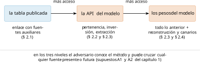
Reidentificación y enlace
Empecemos por el ataque más antiguo, más barato y todavía más frecuente: cruzar dos tablas. El adversario tiene delante un conjunto publicado del que se han suprimido los identificadores directos, y por otro lado una fuente auxiliar donde las mismas personas aparecen con nombre. Si alguna combinación de columnas compartidas es única en ambas, la fila queda unida a su nombre y todo lo demás —el diagnóstico, el salario, la búsqueda— viaja con ella.
El mecanismo, con precisión
Sea \(T\) una tabla publicada sobre una población \(P\), sin identificadores directos, y \(A\) una fuente auxiliar que contiene, para un subconjunto \(P_A \subseteq P\), la identidad de cada individuo junto a un conjunto de atributos \(Q\) presentes también en \(T\). El ataque de enlace calcula la reunión natural \(T \bowtie_Q A\) y considera reidentificada toda fila cuya proyección \(\pi_Q\) tenga exactamente un candidato en la reunión.
La condición de éxito es, entonces, doble: la combinación debe ser única en \(T\) y única en \(A\). Esto da una cota inmediata y útil para estimar el daño antes de publicar.
Sea \(u\) la fracción de individuos de la población cuya proyección \(\pi_Q\) es única (la unicidad poblacional de la definición [def:cuasi]) y sea \(c = \lvert P_A\rvert / \lvert P\rvert\) la cobertura de la fuente auxiliar. Si \(A\) es una muestra aleatoria de \(P\), la fracción esperada de filas de \(T\) reidentificadas de forma unívoca es, aproximadamente, \(u \cdot c\).
Demostración. Justificación. Una fila se reidentifica si (i) su combinación es única en la población, con probabilidad \(u\), y (ii) su titular está en la auxiliar, con probabilidad \(c\) bajo muestreo aleatorio. Ambos sucesos son independientes por construcción del muestreo, de donde \(u\,c\). Las filas no únicas pueden todavía quedar acotadas a unos pocos candidatos, lo que no es reidentificación pero sí una pérdida de privacidad medible —y a menudo suficiente para el adversario—. ◻
Dos consecuencias prácticas. La primera: el atacante no necesita una auxiliar exhaustiva; con cubrir a la mitad de la población obtiene la mitad del daño, linealmente. La segunda, más incómoda: la unicidad poblacional \(u\) es un dato de la población, no del fichero, y por tanto la tasa de reidentificación de una publicación puede subir después de publicarla, sin que nadie toque el fichero, el día que aparezca una auxiliar mejor. Es el supuesto A2 del capítulo anterior convertido en aritmética.
Tres casos que definieron la disciplina
El historial del gobernador (1997). El Grupo de Seguros de la Comisión de Massachusetts publicó los datos hospitalarios de los empleados públicos del estado, «anonimizados» suprimiendo nombre y dirección, y dejando —entre otras— fecha de nacimiento, sexo y código postal. Latanya Sweeney compró por veinte dólares el censo electoral del municipio de Cambridge, que traía nombre y esas mismas tres columnas, y localizó el historial médico del gobernador del estado: en su código postal solo seis personas compartían su fecha de nacimiento, y de ellas solo tres eran hombres (Sweeney 2015). El caso fundó la disciplina y sostiene el 87 % de unicidad demográfica que el capítulo anterior citó —con las cautelas del ejemplo [ej:sweeney]: la cifra es de 2000, sobre el censo de 1990, y Golle (2006) la recalculó en un 63 % con el censo de 2000—.
La usuaria n.º 4417749 (2006). AOL publicó, con ánimo de contribuir a la investigación, veinte millones de consultas de búsqueda de 650 000 usuarios, sustituyendo el nombre de cuenta por un número. No hacía falta ninguna fuente auxiliar formal: bastaba leer las consultas. La usuaria 4417749 había buscado «hombres solteros de 60 años», «perros que orinan en todo» y decenas de apellidos junto al nombre de una localidad de Georgia; dos periodistas del New York Times llamaron a su puerta y publicaron su nombre con su consentimiento (Barbaro y Zeller 2006). La lección técnica es la del capítulo anterior llevada al extremo: el contenido es un cuasi-identificador. Nadie había marcado «consulta de búsqueda» como columna identificante, y sin embargo lo era, con una resolución enorme.
El premio Netflix (2008). Netflix publicó cien millones de valoraciones de 480 000 suscriptores para un concurso de algoritmos de recomendación, sustituyendo el identificador de usuario por un número aleatorio. Narayanan y Shmatikov cruzaron ese conjunto con los perfiles públicos de IMDb y demostraron que el conocimiento de unas pocas películas valoradas, con sus fechas aproximadas, basta para señalar a un suscriptor concreto (Narayanan y Shmatikov 2008). Su resultado clave es de geometría, no de demografía: en un espacio de alta dimensión y disperso —cada usuario valora una fracción minúscula del catálogo— los registros están tan separados unos de otros que un puñado de coordenadas ruidosas los identifica. De ahí que su algoritmo funcione incluso con errores en las fechas y con valoraciones equivocadas.
Por qué la dispersión mata la anonimización
Merece la pena entender el argumento de Netflix, porque explica de un golpe por qué fallan las técnicas clásicas sobre datos modernos. Sea un catálogo de \(m\) ítems y un usuario que interactúa con \(s\) de ellos, con \(s \ll m\). El número de combinaciones posibles es \(\binom{m}{s}\), y su logaritmo —los bits de la sección [sec:cap01-bits]— crece de forma explosiva: \[\log_2 \binom{m}{s} \;\approx\; s \log_2 \frac{m\,e}{s}.\] Con un catálogo de \(m = 17\,700\) películas y solo \(s = 8\) valoradas, la cuenta da unos 90 bits: tres veces y media lo necesario para señalar a un habitante del planeta. La conclusión es que en datos dispersos de alta dimensión la unicidad es la norma, no la excepción, y por tanto la pregunta «¿es reidentificable?» tiene respuesta afirmativa por defecto. Cambie el lector «películas valoradas» por productos comprados, canciones escuchadas, páginas visitadas, antenas de móvil o diagnósticos codificados en CIE-10: la aritmética no distingue.
Aquí se ve también por qué las jerarquías de generalización del capítulo 4 —que funcionan razonablemente sobre edad o código postal— fracasan sobre este tipo de dato: para bajar de 90 bits hay que destruir casi toda la información, y lo que queda ya no sirve para recomendar nada. La disciplina tardó una década en aceptar la consecuencia: si el dato es disperso y de alta dimensión, la única defensa con garantía es formal —y ese es el argumento de la Parte II—.
El algoritmo, no solo la idea
Conviene ver cómo se ataca cuando las columnas no casan exactamente, porque es el caso realista: las fechas difieren en unos días, hay valores ausentes, el adversario recuerda mal. El procedimiento de Narayanan y Shmatikov (2008) —publicado como Scoreboard-RH— resuelve las tres cosas a la vez y merece enunciarse con precisión, porque su estructura reaparece en todos los ataques de enlace modernos.
Sea \(r\) el registro auxiliar del adversario y \(r'\) un candidato de la tabla publicada. Se define primero una similitud atributo a atributo, tolerante al error: \[\mathrm{Sim}(r, r') \;=\; \sum_{i \in \mathrm{supp}(r)} w_i \cdot \mathbb{1}\bigl[\,\lvert r_i - r'_i \rvert \le \tau_i \,\bigr], \qquad w_i \;=\; \frac{1}{\log \lvert \mathrm{supp}(i) \rvert},\] donde \(\tau_i\) es la tolerancia del atributo \(i\) —dos semanas para una fecha, un punto para una valoración— y el peso \(w_i\) hace lo esencial: los atributos raros valen más. Que dos personas hayan visto la misma película minoritaria informa muchísimo más que que ambas hayan visto un éxito de taquilla, y el factor \(1/\log\lvert\mathrm{supp}(i)\rvert\) pone ese sentido común en la fórmula.
El segundo ingrediente es el que evita los falsos positivos, y es el más ingenioso. En lugar de quedarse sin más con el candidato de mayor puntuación, el algoritmo mide la excentricidad: cuánto destaca el mejor sobre el segundo, en unidades de la dispersión del resto, \[\phi \;=\; \frac{\max_1 - \max_2}{\sigma},\] y solo declara reidentificación si \(\phi\) supera un umbral. Un adversario serio no dice «esta es la fila»: dice «esta fila destaca tanto sobre las demás que la coincidencia no puede ser casual». Traducido a nuestra medición de la sección siguiente, la excentricidad es lo que separa una reidentificación de un cruce con mil candidatos plausibles.
Con este aparato, los autores mostraron que conocer ocho valoraciones con sus fechas aproximadas —dos de ellas posiblemente equivocadas— basta para señalar de forma única al 99 % de los suscriptores del conjunto de Netflix, y que con solo dos valoraciones y fechas ajustadas a tres días se identifica a cerca de un 68 %. El conjunto llevaba publicado dos años.
Las fuentes auxiliares que existen de verdad
La proposición [prop:linkage] depende de un parámetro que el defensor suele tratar como pequeño: la cobertura \(c\) de la fuente auxiliar. Conviene enumerar lo que un adversario en España puede reunir hoy sin cometer ningún delito ni gastar apenas dinero, porque la cifra realista no es pequeña.
| Fuente | Qué aporta | Acceso |
|---|---|---|
| censo electoral y padrón | nombre + demografía + domicilio | consulta reglada; copias históricas circulan |
| boletines oficiales | nombre + oposiciones, ayudas, sanciones | abierto y buscable |
| redes sociales y perfiles | edad, ciudad, profesión, fotos | abierto |
| registros mercantiles y colegios | profesión, dirección profesional | abierto o de pago |
| filtraciones acumuladas | correo, teléfono, contraseñas, domicilio | mercado negro |
| datos abiertos municipales | agregados finos por sección censal | abierto |
Dos observaciones. La primera es que estas fuentes se acumulan: cada filtración nueva se suma a las anteriores, y su unión tiene mejor cobertura que cualquiera por separado —por eso la industria de los corredores de datos es viable—. La segunda es temporal: el defensor decide publicar hoy con la cobertura de hoy, pero la publicación seguirá ahí cuando la cobertura sea mayor. Es la diferencia entre un riesgo estático y uno creciente, y explica por qué la única política defendible sobre datos publicados es la del capítulo 5: acotar lo que se filtra con independencia de lo que el adversario llegue a saber.
La cuenta, en un caso español
Para que la aritmética de la dispersión no quede en abstracto, hágase la cuenta sobre un conjunto de datos que cualquier servicio de salud autonómico maneja: la lista de medicamentos dispensados a una persona en un año. El nomenclátor español ronda los 20 000 códigos de presentación; un paciente crónico recibe con facilidad \(s = 10\) distintos. Aplicando la fórmula anterior, \[\log_2\binom{20\,000}{10} \;\approx\; 10 \cdot \log_2\frac{20\,000 \cdot e}{10} \;\approx\; 124 \text{ bits},\] frente a los 25,5 que exige señalar a un residente en España. Es decir, el patrón de medicación de un paciente crónico lo identifica con un margen de casi cien bits: no es que sea reidentificable, es que la combinación es única con abrumadora probabilidad aunque la mitad de los códigos estuviera mal.
Nada de esto exige fecha, edad ni código postal. Y como el adversario solo necesita conocer unos pocos de esos medicamentos —los que se ven en el bolso, en una receta olvidada o en una conversación—, el argumento del capítulo 1 se cierra: sobre datos dispersos, la anonimización por supresión de identificadores no es una protección débil, es ninguna.
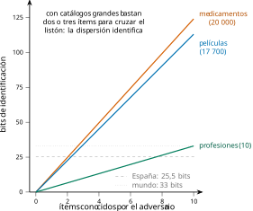
El ataque, medido sobre el dataset del libro
Bastante teoría. El script src/cap02/linkage.py ejecuta la definición [def:linkage] sobre nuestra tabla: publica los 20 000 registros sin num_historia, construye una fuente auxiliar que cubre al 60 % de las personas con nombre, edad, sexo y código postal —exactamente lo que traería un padrón, una filtración comercial o un perfil público—, y cruza. El resultado, medido:
tabla publicada: 20000 filas, sin identificadores directos
fuente auxiliar: 12000 personas (60% de cobertura)
REIDENTIFICADAS de forma univoca: 11522
(57.6% de la tabla publicada, 96.0% de las personas de la auxiliar)
acotadas a 5 candidatos o menos: 12397 (62.0%)El 96 % es la cifra que importa: de cada cien personas que el adversario tenía en su lista, noventa y seis quedan unidas a su diagnóstico, con nombre. Y obsérvese cómo encaja con la proposición [prop:linkage]: la unicidad muestral de estos tres cuasi-identificadores ronda el 96 %, la cobertura es del 60 %, y el producto \(0{,}96 \times 0{,}60 \approx 0{,}58\) predice el 57,6 % de la tabla publicada que efectivamente se reidentifica. El modelo sencillo acierta porque sus dos hipótesis —muestreo aleatorio, independencia— se cumplen por construcción; sobre una auxiliar real (sesgada hacia quien tiene presencia pública) la tasa sube en el grupo cubierto y baja fuera de él.
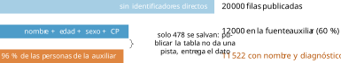
La figura 1.3 dibuja el embudo. Conviene fijarse en el escalón que no existe: entre «personas en la auxiliar» y «reidentificadas» apenas hay pérdida. Publicar la tabla no es dar una pista: es entregar el dato.
Revelar sin reidentificar
Un matiz que se pasa por alto y que en la práctica decide auditorías. El ataque de enlace tiene un hermano menor que no necesita señalar a nadie: la revelación de atributo. Si todas las filas de una clase de equivalencia comparten el valor sensible —las filas 4 a 6 de la tabla de juguete del capítulo anterior, todas con asma—, el adversario que sepa que su objetivo está en esa clase aprende el diagnóstico sin distinguir cuál de las tres filas es.
La consecuencia es que las métricas basadas solo en el tamaño de la clase (\(k\)-anonimato) declaran segura una publicación que filtra el atributo entero. En el ataque medido, las 875 filas acotadas a cinco candidatos o menos son formalmente «no reidentificadas» y sin embargo reducen la incertidumbre del adversario de veinte mil personas a cinco. El capítulo 3 convertirá esta observación en las métricas de diversidad, y el capítulo 4 en el motivo por el que la anonimización clásica necesita más de un criterio.
Inferencia de pertenencia
Subamos un escalón. Supongamos que la tabla no se publica —escarmiento de la sección anterior— y que lo único que sale al mundo es un modelo entrenado con ella: un clasificador de riesgo, un recomendador, una API que devuelve probabilidades. La pregunta del adversario se vuelve mucho más modesta, y por eso mismo más peligrosa: no quiere el historial de nadie, solo saber si una persona concreta estuvo en el conjunto de entrenamiento.
Parece poco. No lo es. Si el modelo se entrenó con pacientes de una unidad de VIH, con solicitantes de asilo o con clientes en mora, saber que alguien estuvo dentro es el dato sensible: la pertenencia al conjunto revela la condición que define el conjunto.
El juego de la pertenencia
La forma limpia de definirlo es como un experimento, al modo criptográfico, porque así queda claro qué significa «el ataque funciona».
Sea \(\mathcal{A}\) un algoritmo de entrenamiento, \(D\) un conjunto de datos y \(z\) un registro. Se lanza una moneda \(b \in \{0,1\}\): si \(b=1\) se entrena \(M \leftarrow \mathcal{A}(D \cup \{z\})\); si \(b=0\), \(M \leftarrow \mathcal{A}(D)\). El adversario recibe acceso a \(M\) (y posiblemente a \(z\) y a la distribución de los datos) y devuelve un \(\hat b\). Su ventaja es \(\mathrm{Adv} = \Pr[\hat b = b] - \tfrac{1}{2}\).
Ventaja cero significa que el modelo no dice nada sobre la presencia de \(z\); ventaja \(\tfrac12\) significa que lo dice todo. Merece la pena retener esta definición porque es exactamente lo que la privacidad diferencial acota: cuando en el capítulo 5 aparezca la garantía \(\eps\), lo que estará limitando es la ventaja de este adversario, para todo \(z\) y todo \(D\). Los ataques de esta sección son, en ese sentido, el reverso empírico de la garantía formal: miden lo que la teoría promete acotar. La figura 1.4 dibuja el experimento.
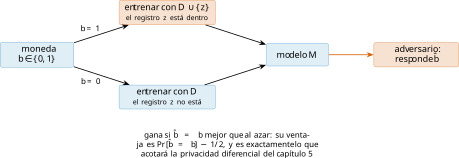
Por qué el modelo sabe
El mecanismo es la brecha de generalización. Un modelo ajusta sus parámetros para reducir la pérdida sobre lo que ve; si su capacidad excede lo que el problema exige, parte de esa reducción no es aprendizaje sino memoria. El resultado observable es que la pérdida sobre los datos de entrenamiento queda sistemáticamente por debajo de la pérdida sobre datos nuevos, y esa diferencia es una señal que el adversario puede leer.
El ataque más simple, y sorprendentemente competitivo, es un umbral sobre la pérdida: si \(\ell(M, z)\) es baja, apostar «miembro». Shokri et al. (2017) lo formalizaron con modelos sombra: entrenar decenas de modelos propios sobre datos de la misma distribución, con miembros conocidos, y aprender de ellos qué aspecto tiene la salida de un modelo ante un miembro. La idea sigue siendo la base de todo lo que vino después.
Modelos sombra, paso a paso
El umbral sobre la pérdida tiene un defecto: el valor que separa «miembro» de «no miembro» depende del problema, del modelo y hasta del registro concreto. Los modelos sombra resuelven esa calibración sin conocer el modelo víctima por dentro. La receta, enunciada como algoritmo:
El adversario reúne datos de la misma distribución que los de la víctima (no hace falta que sean los mismos).
Entrena \(N\) modelos sombra con el mismo procedimiento que supone usó la víctima, cada uno sobre un subconjunto aleatorio distinto. Para cada registro sabe, por construcción, en qué sombras estuvo dentro y en cuáles fuera.
Para cada registro recoge dos poblaciones de estadísticos: la de las sombras que lo vieron y la de las que no.
Ante el modelo víctima, compara el estadístico observado con esas dos poblaciones y decide.
Carlini, Chien, et al. (2022) llevaron el paso 4 a su forma óptima. Si se modelan las dos poblaciones como gaussianas —sobre la transformación logit de la confianza, donde se aproximan bien—, la decisión estadísticamente correcta es el cociente de verosimilitudes: \[\Lambda(z) \;=\; \frac{p\bigl(\,\ell(M,z)\; \big|\; \mathcal{N}(\mu_{\text{dentro}}, \sigma^2_{\text{dentro}})\,\bigr)} {p\bigl(\,\ell(M,z)\; \big|\; \mathcal{N}(\mu_{\text{fuera}}, \sigma^2_{\text{fuera}})\,\bigr)} ,\] y se acusa cuando \(\Lambda\) supera un umbral. La diferencia con el criterio ingenuo es que la calibración es por registro: un ejemplo fácil, que todos los modelos clasifican bien lo hayan visto o no, ya no genera falsas acusaciones, mientras que un ejemplo difícil —raro, atípico, de la cola— delata su pertenencia con enorme claridad. De ahí que este ataque funcione precisamente donde más duele, y de ahí la insistencia en medir a FPR baja. La figura 1.5 resume el procedimiento.
Una consecuencia que conviene retener para el capítulo 6: el coste del ataque es alto (entrenar decenas de modelos) pero se paga una vez, y su resultado —saber qué registros son vulnerables— sirve también al defensor. Auditar un modelo propio con LiRA antes de publicarlo es hoy buena práctica, y es exactamente lo que recomendará la metodología de la sección 1.5.
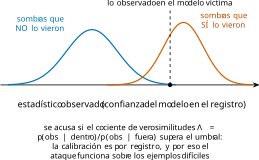
El ataque medido, y una lección de método
El script src/cap02/membership.py entrena dos bosques aleatorios sobre la mitad de nuestra tabla —misma tarea, mismos datos, distinta capacidad— y ataca ambos con el criterio de pérdida:
memorizador: exactitud dentro 0.999 · fuera 0.466 · brecha 0.532
MIA AUC = 0.910 | TPR@FPR=1% : 0.144 | TPR@FPR=0.1% : 0.021
regularizado: exactitud dentro 0.549 · fuera 0.551 · brecha -0.002
MIA AUC = 0.525 | TPR@FPR=1% : 0.018 | TPR@FPR=0.1% : 0.002El contraste no puede ser más limpio: el modelo con memoria delata a sus miembros con un AUC de 0,91; el regularizado, que generaliza igual de bien —fíjese el lector en que su exactitud fuera es incluso mayor—, apenas supera el azar. La figura 1.6 muestra la relación completa: la vulnerabilidad sigue a la brecha, no al tamaño ni a la arquitectura.
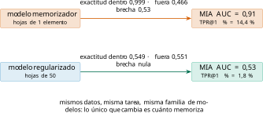
Y ahora la lección de método, que es probablemente lo más importante del capítulo. Durante años los ataques de pertenencia se evaluaron por su exactitud media o su AUC, y con esa vara muchos parecían inofensivos: un 52 % de aciertos suena a ruido. Carlini, Chien, et al. (2022) demostraron que esa métrica es engañosa, porque promedia sobre toda la población y esconde lo único que importa: un ataque es peligroso si consigue señalar a unos pocos individuos con mucha confianza. La métrica correcta es la tasa de acierto (TPR) a tasas de falsa alarma muy bajas —0,1 % o menos—, y se lee en una ROC en ejes logarítmicos, no lineales.
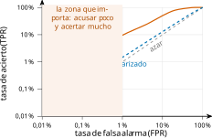
La figura 1.7 lo enseña con nuestros datos. En la esquina de interés, el modelo memorizador acierta el 14,4 % de sus acusaciones cuando solo se permite equivocarse en el 1 % de los no miembros —más de catorce veces el azar—, y sigue funcionando a FPR del 0,1 %. Traducido: el adversario puede seleccionar un subconjunto pequeño de personas y afirmar con alta confianza que estuvieron dentro. Para las personas de ese subconjunto la privacidad se ha perdido del todo, aunque el promedio de la población diga que el ataque «apenas funciona». Es la misma lección de las colas del capítulo 1, ahora del lado del atacante.
Pertenencia sin modelo: agregados y la ley fundamental
Conviene desmontar aquí una creencia extendida: que el problema es de los modelos y que publicar solo estadísticos agregados es seguro.
En 2008, Homer et al. (2008) demostraron que a partir de las frecuencias alélicas agregadas de un estudio genómico —medias de miles de participantes— se puede decidir si el ADN de una persona concreta formaba parte de la cohorte, comparando su perfil con las medias del estudio y con una población de referencia. La consecuencia institucional fue inmediata: los Institutos Nacionales de Salud estadounidenses retiraron del acceso público los datos agregados de sus estudios de asociación. Publicar medias resultó ser publicar pertenencia, y en un dominio donde la pertenencia revela enfermedad.
El resultado no era, en realidad, una sorpresa teórica. Cinco años antes, Dinur y Nissim (2003) habían probado lo que hoy se conoce como la ley fundamental de la recuperación de información: si se responden demasiadas consultas agregadas con demasiada exactitud sobre una base de datos, un adversario puede reconstruirla casi por completo. En su formulación, con una base de \(n\) registros binarios, responder consultas de suma con error \(o(\sqrt{n})\) permite reconstruir casi todas las entradas.
Toda publicación de estadísticos suficientemente exactos y suficientemente numerosos sobre un conjunto de datos permite reconstruirlo. En consecuencia, ninguna técnica que se limite a agregar —sin añadir incertidumbre calibrada— puede ofrecer una garantía de privacidad frente a un número creciente de consultas.
Este teorema es la razón de existir de la Parte II. Marca el límite de todo lo que el capítulo 4 llamará «anonimización clásica» y obliga a un cambio de estrategia: si no se puede evitar que la información se escape sumando consultas, hay que contabilizar cuánta se escapa y ponerle un presupuesto. Eso es exactamente la privacidad diferencial.
El caso que cambió una política de Estado
El teorema [teo:dinur] podría parecer una curiosidad teórica: en la práctica nadie hace millones de consultas exactas a una base de datos. Pero sí las hace —sin llamarlas así— toda oficina estadística cuando publica tablas.
La Oficina del Censo de Estados Unidos lo comprobó sobre sí misma. Tomó las tablas agregadas que había publicado del censo de 2010 —miles de millones de cifras: recuentos por manzana, edad, sexo, raza y etnia— y las trató como un enorme sistema de ecuaciones cuyas incógnitas eran los registros individuales. Reconstruyó microdatos de persona para la población entera y, cruzándolos después con ficheros comerciales, obtuvo reidentificaciones a gran escala (Abowd y Hawes 2023). Nada de lo publicado contenía un solo registro individual; el conjunto de las publicaciones, sí.
La reacción institucional fue proporcional al hallazgo: el censo de 2020 se publicó protegido con privacidad diferencial, con un presupuesto de privacidad explícito y una discusión pública —y áspera— sobre cuánto ruido era aceptable y quién decidía. Es, hasta la fecha, el mayor despliegue de una garantía formal de privacidad sobre datos de una nación entera, y su origen no fue un ataque externo, sino un equipo rojo interno haciendo exactamente lo que recomienda la sección 1.5.
Dos lecturas para el lector español. La primera, técnica: si el riesgo existe para una oficina censal —con estadísticos profesionales, supresión de celdas pequeñas y décadas de metodología de control de divulgación—, existe para cualquier publicación de agregados municipales, sanitarios o educativos. La segunda, de gobernanza: el paso de «control de divulgación» a «privacidad diferencial» no fue una moda técnica, sino la consecuencia de haber medido. Otra vez la misma idea: primero se mide, y la medida decide la política.
El escepticismo de 2024: cuando el ataque no funciona
Un capítulo de ataques que solo cuente éxitos sería propaganda. La evidencia reciente obliga a matizar, y el matiz es tan importante como los ataques.
En 2024, Duan et al. (2024) evaluaron ataques de pertenencia sobre grandes modelos de lenguaje —de 160 millones a 12 mil millones de parámetros— controlando cuidadosamente que los candidatos «miembro» y «no miembro» procedieran de la misma distribución y del mismo periodo temporal. Su conclusión es demoledora para la literatura previa: en la mayoría de configuraciones los ataques apenas superan al azar. Lo que muchos benchmarks estaban midiendo no era pertenencia, sino contaminación temporal: los textos «no miembros» hablaban de cosas posteriores al entrenamiento, y el modelo los encontraba raros por eso, no por no haberlos visto. Meeus et al. (2024) llegan a un diagnóstico parecido revisando el campo entero, y Maini et al. (2024) proponen mover la pregunta de la fila al conjunto —«¿entrenaste con mi dataset?»—, que sí resulta contestable con fiabilidad.
Las tres lecciones son de método, y valen para todo el libro:
Un ataque que funciona demuestra fuga; uno que falla no demuestra seguridad. Puede que el adversario no fuera lo bastante bueno, o que la evaluación estuviera mal montada.
La comparación debe ser justa. Miembros y no miembros deben venir de la misma distribución y del mismo tiempo; si no, se mide otra cosa.
El régimen importa. Los modelos de lenguaje ven cada ejemplo una o pocas veces sobre corpus gigantescos; los modelos tabulares y los ajustes finos ven pocos datos muchas veces. La memorización —y por tanto el ataque— se comporta de forma muy distinta en cada régimen, como veremos al medirla en la sección 1.4.
Inversión del modelo y extracción de datos
La pertenencia era la pregunta mínima. Subamos al último escalón: que el adversario pida de vuelta el contenido. Aquí conviene separar tres cosas que la prensa mezcla y que tienen garantías, dificultades y consecuencias distintas.
Inversión: reconstruir un atributo
Fredrikson et al. (2015) plantearon el problema así: dado un modelo que predice \(y\) a partir de atributos \((x_1,\dots,x_d)\), y conocidos todos los atributos menos uno, ¿puede recuperarse el que falta? La respuesta es sí, y el procedimiento es directo: probar todos los valores posibles del atributo desconocido y quedarse con el que maximiza la confianza del modelo en la etiqueta observada. Formalmente, \[\hat x_j \;=\; \argmax_{v} \; \Pr\nolimits_M\bigl[\,y \mid x_1,\dots,x_{j-1}, v, x_{j+1},\dots,x_d \,\bigr] \cdot \Pr[x_j = v],\] donde el segundo factor es el conocimiento previo del adversario sobre la distribución del atributo. Su demostración más citada —recuperar una cara reconocible a partir de un modelo de reconocimiento facial y un nombre— se hizo célebre, y también fue objeto de una crítica importante que conviene conocer: lo que el procedimiento recupera se parece más a un promedio de la clase que al rostro de un individuo concreto. La distinción es exactamente la del capítulo 1 entre reidentificar y revelar un atributo: la inversión no devuelve el registro, devuelve lo que el modelo aprendió sobre la categoría a la que ese registro pertenece —que puede ser mucho o casi nada según cuántos individuos haya en la clase—.
Nuestro dataset permite ver el fenómeno sin mitología. Si el modelo predice diagnóstico a partir de los cuasi-identificadores, invertirlo para adivinar el código postal de una persona funciona bien allí donde el modelo memorizó —la sección siguiente lo medirá— y devuelve el código postal más común de la clase donde no memorizó. Un adversario prudente sabe distinguir las dos situaciones; un titular de prensa, no.
La inferencia de atributo, medida: un resultado incómodo
Toca comprobar la inversión sobre nuestros datos, y el resultado obliga a matizar el discurso habitual. El script src/cap02/vulnerabilidad.py entrena el modelo memorizador con la mitad de la tabla e intenta adivinar el diagnóstico de personas a partir de sus cuasi-identificadores:
inferencia de atributo sobre personas NO vistas: 46.6%
(linea base «responder siempre ninguno»: 55.1%)
la misma inferencia sobre personas del entrenamiento: 99.9%Léanse las dos cifras juntas, porque juntas dicen algo importante. Sobre personas que el modelo no vio, el ataque de inferencia de atributo fracasa: acierta menos que la estrategia trivial de responder siempre el diagnóstico más frecuente. Sobre personas que sí vio, acierta el 99,9 %. En este dataset el diagnóstico es independiente de los cuasi-identificadores por construcción, de modo que no hay nada generalizable que aprender; todo lo que el modelo «sabe» es memoria.
De ahí la conclusión que conviene llevarse: lo que a menudo se presenta como «inversión del modelo» es, en realidad, memorización vista desde otro ángulo. Cuando existe una relación real entre atributos, el modelo la aprende y predecir el atributo sensible de un desconocido no es un ataque a la privacidad sino, sencillamente, estadística —y a nadie le sorprende que un modelo epidemiológico prediga riesgo a partir de la edad—. El daño específico a la privacidad aparece cuando la predicción es mucho mejor para quien estuvo en el entrenamiento que para quien no: esa diferencia, y no la exactitud absoluta, es la fuga. Es el mismo criterio de la definición [def:mia], y una buena vara para leer titulares alarmistas.
¿Quién es vulnerable? La respuesta depende de la cola
La segunda medición del mismo script cruza el ataque de pertenencia con la rareza de cada persona, medida como el tamaño de su clase de equivalencia (definición [def:clase]). La hipótesis de partida —razonable, y respaldada por la literatura— era que las personas atípicas serían más vulnerables. Lo medido dice otra cosa:
clase de 1 ( 86 filas): separacion 0.414
clase de 3-4 ( 504 filas): separacion 0.423
clase de 9-16 (10649 filas): separacion 0.417
clase de >16 ( 5437 filas): separacion 0.411La separación entre miembros y no miembros es plana: todo el mundo es igual de vulnerable. La explicación no invalida la hipótesis, la contextualiza: nuestra tabla, con un 99,5 % de filas únicas (capítulo 1), es toda ella cola. No hay una «cabeza» de perfiles comunes con la que contrastar, porque el código postal convierte a cada fila en un caso aislado, y el modelo memoriza a todos por igual.
Sobre datos reales —donde sí existen perfiles frecuentes— el efecto es el que describe Feldman (2020) y miden Carlini, Chien, et al. (2022): la memorización, y con ella la vulnerabilidad, se concentra en los ejemplos atípicos. Nuestro resultado plano no contradice ese hallazgo; lo que hace es enseñar una condición previa que rara vez se enuncia: hablar de «los vulnerables» presupone que existe una mayoría no vulnerable. Cuando el dataset entero está en la cola —y muchos datasets clínicos, biométricos o de movilidad lo están— la protección no puede reservarse para un subgrupo: o cubre a todo el mundo o no cubre a nadie.
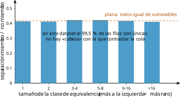
Reconstrucción con adversario informado
La versión fuerte del problema es la que estudian Balle et al. (2022): un adversario que conoce todo el conjunto de entrenamiento salvo un registro, y observa los parámetros del modelo, ¿puede reconstruir ese registro? Es un adversario deliberadamente irreal —nadie sabe tanto—, y esa es precisamente su virtud: si el sistema resiste a este, resiste a cualquiera. Sus resultados muestran que sin defensas formales la reconstrucción es viable, y que la privacidad diferencial la degrada de forma cuantificable. Retendremos la idea metodológica, que reaparecerá en toda la Parte II: para acotar el riesgo hay que razonar con el peor adversario imaginable, no con el probable.
Extracción literal en modelos de lenguaje
El caso que ha llevado el problema a la primera plana es la extracción de datos de entrenamiento en modelos generativos. Carlini et al. (2021) demostraron sobre GPT-2 que consultando el modelo con prefijos adecuados y ordenando las generaciones por su relación de verosimilitud es posible recuperar cadenas literales del corpus —nombres, teléfonos, direcciones, fragmentos de código— que aparecían muy pocas veces. Dos años después, Nasr et al. (2023) llevaron el ataque a modelos en producción: un ataque de divergencia —pedir al modelo que repita una palabra indefinidamente hasta que se desvía y empieza a emitir texto memorizado— multiplicaba por 150 la tasa de emisión de datos de entrenamiento, permitiendo recuperar gigabytes por un coste del orden de doscientos dólares.
Tres observaciones para el ingeniero:
La superficie no es solo el corpus, es la interfaz. El ataque de divergencia no explota un fallo del modelo sino una forma de consulta que nadie había previsto; ninguna revisión del conjunto de entrenamiento lo habría evitado.
El coste del atacante es ridículo comparado con el del defensor, como ya vimos en el capítulo anterior.
Lo extraído es lo raro. Las cadenas recuperadas son las que aparecían pocas veces y eran atípicas: los datos personales, precisamente, viven ahí.
Fuga por gradientes: cuando ni siquiera se comparte el dato
Cierro el catálogo con el ataque que más desconcierta a quien confía en el aprendizaje federado. En ese esquema (capítulo 9) los datos no salen del dispositivo: solo salen los gradientes calculados sobre ellos. Zhu et al. (2019) demostraron que, en muchos escenarios, de un gradiente se puede reconstruir el ejemplo que lo produjo: basta optimizar una entrada sintética hasta que su gradiente coincida con el observado. Es la refutación empírica de la intuición «si no muevo el dato, no lo expongo»: el gradiente es una función del dato, y con frecuencia una función casi invertible; la figura 1.9 lo esquematiza.
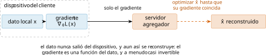
Memorización: el mecanismo detrás de todo
Los tres ataques anteriores tienen un origen común. Un modelo puede delatar pertenencia, permitir inversión o emitir texto literal por una sola razón: porque guarda, en sus parámetros, información específica de ejemplos concretos en lugar de solo el patrón general. A eso lo llamamos memorización, y como todo en este libro, se puede medir.
Medir la memorización en bits
La técnica canónica es la de los canarios (Carlini et al. 2019): introducir en el entrenamiento un registro artificial que contiene un secreto elegido al azar dentro de un espacio conocido, y comprobar después cuánto delata el modelo ese secreto frente a los demás candidatos.
Sea \(\mathcal{S}\) el espacio de secretos posibles, \(s^\star \in \mathcal{S}\) el insertado, y sea \(\mathrm{rango}(s^\star)\) la posición de \(s^\star\) al ordenar todos los candidatos por la confianza que el modelo les asigna. La exposición es \[\mathrm{exp}(s^\star) \;=\; \log_2 \lvert\mathcal{S}\rvert - \log_2 \mathrm{rango}(s^\star).\] Vale \(0\) cuando el secreto es indistinguible del resto —rango medio \(\lvert\mathcal{S}\rvert/2\), salvo el término constante— y alcanza \(\log_2\lvert\mathcal{S}\rvert\) cuando el modelo lo pone el primero.
La medida está en bits y se interpreta igual que en el capítulo 1: dice cuánta información del secreto se ha filtrado a los parámetros. Una advertencia práctica que costó una medición equivocada al escribir este capítulo: los empates deben contar a medias. Si el modelo asigna la misma confianza a todos los candidatos, el secreto no está expuesto en absoluto, y un cálculo ingenuo del rango —«¿cuántos puntúan estrictamente más?»— devolvería rango 1 y exposición máxima. El código del libro usa el rango medio; conviene revisarlo en cualquier implementación ajena.
El experimento, medido
El script src/cap02/memorizacion.py inserta un canario —un perfil con un código postal secreto, escogido entre mil reales— un número creciente de veces, y mide su exposición sobre dos modelos de distinta capacidad:
espacio de secretos: 1000 codigos postales (exposicion maxima 10.0 bits)
memorizador repetido 1 -> rango 4, exposicion 8.0 bits
memorizador repetido 2 -> rango 1, exposicion 10.0 bits
regularizado repetido 1 -> rango 289, exposicion 1.8 bits
regularizado repetido 2 -> rango 176, exposicion 2.5 bits
regularizado repetido 4 -> rango 48, exposicion 4.4 bits
regularizado repetido 8 -> rango 1, exposicion 9.4 bitsEl resultado, dibujado en la figura 1.10, dice tres cosas que conviene no olvidar.
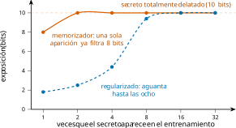
Primera: una sola aparición basta. El modelo con hojas de un elemento delata el secreto con 8 de los 10 bits posibles habiendo visto el canario una vez. No hace falta que un dato se repita para que quede memorizado; basta que sea suficientemente distintivo —y en el capítulo 1 vimos que casi todo el mundo lo es—.
Segunda: la regularización sube el umbral, no lo elimina. El modelo con hojas grandes empieza filtrando 1,8 bits, pero a las ocho repeticiones ya delata el secreto entero. Las técnicas habituales contra el sobreajuste —podar, regularizar, parar antes— reducen la memorización, y por eso ayudan; pero no ofrecen ninguna garantía, y su punto de ruptura depende de datos que el defensor no controla.
Tercera: no hay defensa sin contabilidad. Estas dos curvas son empíricas: describen lo que ocurrió con estos datos, este modelo y este canario. Cambie cualquiera de los tres y habrá que volver a medir. Una garantía de verdad debe valer para todo registro, todo conjunto y todo adversario —y eso, otra vez, es la Parte II—.
El efecto cebolla: por qué no basta con quitar los raros
Llegados aquí, la reacción natural de un equipo de ingeniería es tentadora y equivocada: «identifiquemos los registros vulnerables y saquémoslos del entrenamiento». Carlini, Jagielski, et al. (2022) pusieron nombre a por qué no funciona: el efecto cebolla. Al retirar la capa de registros más expuestos y reentrenar, los que quedaban justo detrás —antes protegidos por la presencia de aquellos— pasan a ser los más expuestos. Se pela una capa y aparece otra, como en la figura 1.11.
El mecanismo es comprensible con lo que ya sabemos. Un registro atípico está «tapado» por otros parecidos que le proporcionan compañía estadística; si desaparecen, deja de tener con quién confundirse —su clase de equivalencia se encoge, en el vocabulario del capítulo 1— y su exposición sube. La vulnerabilidad, por tanto, no es una propiedad del registro sino de su relación con el resto, y por eso no puede eliminarse quitando individuos: cada eliminación redefine el problema.
Sea \(V(D)\) el conjunto de registros de \(D\) cuya exposición supera un umbral fijo. En general no se cumple que \(V(D \setminus V(D)) = \emptyset\): retirar los vulnerables produce un conjunto nuevo con sus propios vulnerables. Iterar el procedimiento reduce el conjunto de datos sin garantizar en ningún paso que el resto esté protegido.
La consecuencia práctica es contundente y conviene decirla sin rodeos: no existe una versión «depurada» del conjunto de datos que sea segura por construcción. Toda defensa basada en seleccionar qué datos entran comparte este defecto, incluidas las que a veces se presentan como buenas prácticas —eliminar duplicados raros, filtrar identificadores del corpus, quitar minorías del entrenamiento—. Son mitigaciones útiles, reducen el daño esperado y hay que aplicarlas; pero no son garantías, y la diferencia entre una mitigación y una garantía es justo el asunto de la Parte II.
Hay además un coste ético que no conviene esconder: los registros «vulnerables» que uno se sentiría tentado de eliminar son, con frecuencia, los de las minorías —la enfermedad rara, el origen poco frecuente, la profesión inusual—. Depurar el conjunto de datos mejora la métrica de privacidad a costa de expulsar del modelo precisamente a quien peor servido está ya. La solución correcta no es elegir entre proteger o servir a esas personas, sino pagar el precio en el parámetro que las cubre a todas por igual.
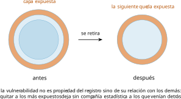
Por qué memorizan: la cola larga
Queda la pregunta incómoda: si memorizar es malo, ¿por qué no entrenar simplemente modelos que no memoricen? Feldman (2020) dio una respuesta que cambió la forma de ver el problema: cuando la distribución de los datos tiene cola larga —muchas subpoblaciones raras, cada una con poquísimos ejemplos—, memorizar esos ejemplos atípicos es necesario para generalizar bien sobre ellos. Un modelo que se negara a memorizar la cola sería peor clasificando a las personas que están en la cola.
Y aquí se cierra el círculo del capítulo con el anterior. Las colas son exactamente donde vive la privacidad: la persona con la combinación rara es la que queda única (sección [sec:cap01-gemelos]), la que el modelo memoriza y la que el atacante extrae. Existe, por tanto, una tensión real —no un fallo de ingeniería— entre servir bien a las minorías y protegerlas. Esa tensión no se resuelve con buenas prácticas: se gestiona con un parámetro que diga cuánto se está dispuesto a filtrar. Ese parámetro tiene nombre desde el capítulo 5 y se llama \(\eps\).
Auditar el propio sistema: una metodología
Un catálogo de ataques solo sirve si se convierte en procedimiento. Lo que sigue es la metodología que el libro usará en los capítulos de aplicación y que un equipo puede adoptar tal cual: una auditoría de privacidad —un equipo rojo propio— ejecutada sobre los sistemas de la casa antes de que la ejecute alguien de fuera.
Los cinco pasos
1. Fijar el modelo de adversario, por escrito. Las tres coordenadas del capítulo 1: conocimiento auxiliar, acceso y objetivo. Sin este paso, cualquier resultado es ininterpretable, porque «el sistema es seguro» no significa nada si no se dice frente a quién. Un error frecuente es escribir un adversario cómodo; la tabla 1.2 sirve de antídoto.
2. Elegir los ataques que corresponden al acceso. No todos aplican a todos los sistemas. La regla es sencilla: si se publica una tabla, enlace; si se publica un modelo o una API, pertenencia y, según el caso, inversión o extracción; si se entrena de forma distribuida, además fuga por gradientes.
3. Medir con la métrica adecuada. Para el enlace, la tasa de reidentificación unívoca y la distribución de candidatos. Para la pertenencia, TPR a FPR baja —y no la exactitud media—. Para la memorización, exposición en bits. Toda medida se acompaña de la población sobre la que se hizo y de la fecha, por lo dicho en el ejemplo [ej:sweeney].
4. Mirar las colas, no la media. El resultado que interesa a una autoridad de control no es «el ataque acierta un 52 %», sino «existen \(n\) personas cuya pertenencia se determina con confianza alta». Un informe honesto identifica esos subgrupos.
5. Repetir en cada cambio. Un resultado de auditoría caduca: caduca cuando cambia el modelo, cuando cambian los datos y —esto es lo que se olvida— cuando cambia el mundo, porque aparecen fuentes auxiliares nuevas. La auditoría es un control periódico, no un certificado.
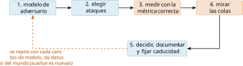
Qué se escribe en el informe
La forma del entregable importa, porque es lo que leerá quien decida. Con la experiencia de los cuatro ataques de este capítulo, un informe mínimo defendible contiene:
Modelo de adversario asumido, con sus tres coordenadas y la justificación de la cobertura supuesta.
Ataques ejecutados, con versión del código y semilla, para que la medición sea reproducible.
Resultados con su métrica correcta y, en pertenencia, la curva ROC en ejes logarítmicos.
Población afectada en la cola: cuántas personas y con qué características quedan expuestas por encima del umbral que el equipo haya fijado.
Decisión: publicar, publicar con mitigación, o no publicar; y si hay mitigación, con qué parámetro y qué coste en utilidad medido.
Caducidad: cuándo se repite.
Ese documento es, en la práctica, la parte técnica de la evaluación de impacto del artículo 35 del RGPD (Reglamento (UE) 2016/679, General de Protección de Datos (RGPD) 2016) que el capítulo 14 formalizará; y para modelos, la evidencia con la que se sostiene —o se desmonta— la pretensión de anonimidad que el EDPB exige demostrar caso por caso (European Data Protection Board 2024).
Del ataque a la defensa: el mapa del resto del libro
Termino con la tabla que convierte este capítulo en el índice de los siguientes. Cada ataque tiene una familia de defensas, y ninguna es gratis: la columna de la derecha anticipa el precio que se paga, que es de lo que trata la frontera utilidad–privacidad de la figura [fig:cap01-frontera].
| Ataque | Defensa con garantía | Capítulo | Precio |
|---|---|---|---|
| enlace | generalización y supresión (sin garantía formal); publicación con DP | 4, 5 | resolución de las columnas |
| pertenencia | DP en el entrenamiento (DP-SGD) | 6 | exactitud y cómputo |
| inversión y extracción | DP; filtrado y deduplicación del corpus | 5, 6, 8 | utilidad del generativo |
| fuga por gradientes | agregación segura + DP en cliente | 9 | complejidad y rondas |
| memorización | DP con presupuesto contabilizado | 5, 6 | \(\eps\) frente a utilidad |
Obsérvese que la columna central converge: casi todas las filas acaban en privacidad diferencial. No es casualidad ni entusiasmo de autor, sino consecuencia del teorema [teo:dinur]: cuando la fuga es inevitable, lo único que queda es contabilizarla y acotarla. Cómo se hace eso, con qué matemática y a qué precio, es la Parte II.
Síntesis y puente
Cuatro ataques, cuatro medidas. El enlace convierte una tabla publicada en nombres con diagnóstico: en nuestro dataset, el 96 % de las personas que el adversario tenía en su lista, con un modelo sencillo —unicidad por cobertura— que predice la tasa. La inferencia de pertenencia reduce la pregunta a un bit y lo consigue cuando hay brecha de generalización: AUC de 0,91 en el modelo con memoria frente a 0,53 en el regularizado, y —lección de método— lo que hay que mirar no es el promedio sino la tasa de acierto a falsa alarma muy baja. La inversión y la extracción devuelven contenido, y lo que devuelven es siempre lo raro. Y la memorización, que es el mecanismo común, se mide en bits: ocho de diez con una sola aparición del secreto.
De todo ello se sigue el argumento que sostiene el resto del libro. Las defensas ad hoc —suprimir identificadores, agregar, regularizar— funcionan hasta que dejan de hacerlo, y el defensor no puede saber cuándo, porque depende de auxiliares futuras, de consultas imprevistas y de la cola de su propia distribución. La ley fundamental de la recuperación de información (teorema [teo:dinur]) lo dice de manera terminante. El capítulo siguiente da el paso intermedio imprescindible —dejar de contar anécdotas y empezar a cuantificar el riesgo con métricas reproducibles—, y la Parte II cambia de estrategia: en vez de esperar que el ataque no llegue, se acota por diseño lo que podría lograr.
Errores comunes
Creer que un ataque fallido demuestra seguridad: solo demuestra que ese ataque, tal como se montó, no funcionó (Duan et al. 2024).
Evaluar un ataque de pertenencia por su exactitud media: esconde precisamente el caso peligroso, que es acertar mucho sobre pocos (Carlini, Chien, et al. 2022).
Comparar miembros y no miembros de distinta procedencia o distinta época: se mide contaminación temporal, no pertenencia.
Suponer que publicar solo agregados es seguro: la ley fundamental (teorema [teo:dinur]) y el caso de los estudios genómicos (Homer et al. 2008) dicen lo contrario.
Confundir la inversión de un modelo con recuperar el registro de una persona: a menudo devuelve el promedio de su clase, y la diferencia importa al valorar el daño.
Confiar en que el aprendizaje federado protege por no mover el dato: el gradiente es función del dato y con frecuencia se invierte (Zhu et al. 2019).
Pensar que un dato solo se memoriza si se repite: en nuestro experimento una sola aparición filtró 8 de 10 bits.
Confiar la defensa a la regularización: sube el umbral de memorización, pero no da ninguna garantía y su punto de ruptura depende de datos que el defensor no controla.
Práctica medida y ejercicios — disponibles en la obra completa (papel, PDF y EPUB).
Marcos frente a frente: ENS/UE vs NIST — sección disponible en la obra completa.